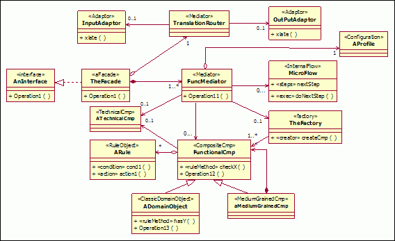
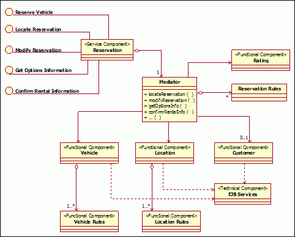

In general, service components are larger-grained units that encapsulate a number of functional components and may
depend (externally) on other service components for the fulfillment of their functionality. Service components, as a
whole, provide the functionality corresponding to that required by a subsystem and may be a one-to-one correspondence.
In order to implement a service component it needs to be decomposed into functional and technical components.
Functional and Technical components
In decomposing a service component into its constituent functional and technical components, we have delegated the
functionality provided by the service component to fulfill the subsystem's functional responsibilities. Functional
components supply the business functionality required, while technical components provide generic functionality such as
authentication, error handling, auditing, logging, etc which are operational and non-functional oriented.
Functional components
The composition of these functional components into a larger-grained service component is not merely structural; it
also involves the definition of flow, that is, the collaboration of the functional components to provide functionality
to support the business processes. As seen earlier, the functionality of these business-related components is enabled
through the services (implemented by the component's finer level object or legacy system structure) defined.
It is important to note that this step includes traditional OOAD activities. We have a focused and well-partitioned
scope to direct the object design. In traditional object-oriented design, we tend to create larger more dependent
object graphs, whereas if subsystem analysis follows the identification of functional areas within the business, we
have a very clearly defined scope to focus on and direct our design energies towards. These results in a set of more
loosely coupled object models (class diagrams and sequence diagrams triggered by system use cases).
One of the key variations across business processes is due to business rules as shown in figure below. These variations
are typically captured during Variation-Oriented Design.
Technical components
The composition of technical components into larger-grained service components occurs in the same fashion as functional
components.
Technical components such as authentication, logging and reporting may be used across business processes. These common
components are needed to form the infrastructure to support the functional components.
Enterprise component pattern
The Enterprise Component Pattern in figure below shows the service component acting as a façade for the
underlying functional and technical components. Services are exposed on the edge of the service component at the
component façade. Requests for services on the façade are forwarded to a mediator which then routes the message to the
appropriate functional or technical component

Enterprise component pattern
The dependencies and needs of the functional components to the technical components, for the Rent-a-car example, are
depicted in figure below.

Rent-a-car Reservation service component using the enterprise component pattern
The collection of subsystem component models is gathered into the functional component model which shows the reliance
of the functional components on the technical components, and the inter-relationships between the functional components
themselves. Leaf-level sub-processes that are assigned to the subsystem façade need to be specified as services the
subsystem will provide. These sub-processes are supported and implemented through a finer grained set of system use
cases encapsulated within the structure of the subsystem. The functional components are relied upon for the realization
of the use cases. In turn the functional components depend on the technical components and utilities for their
infrastructure needs.
|